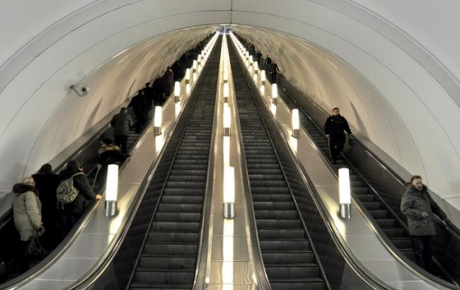
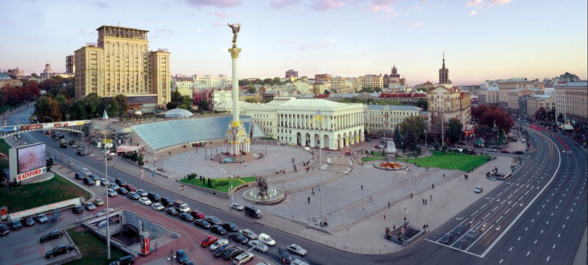
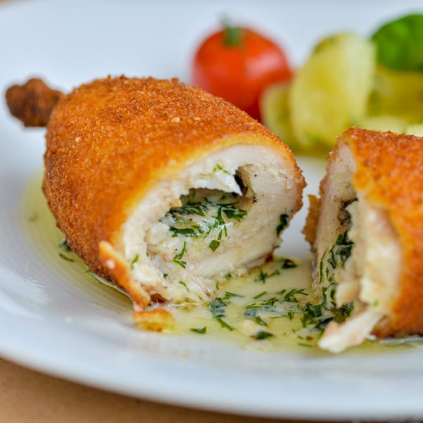
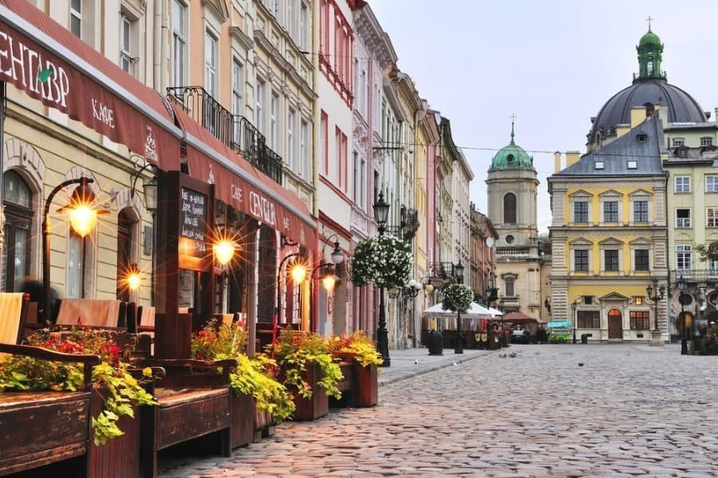
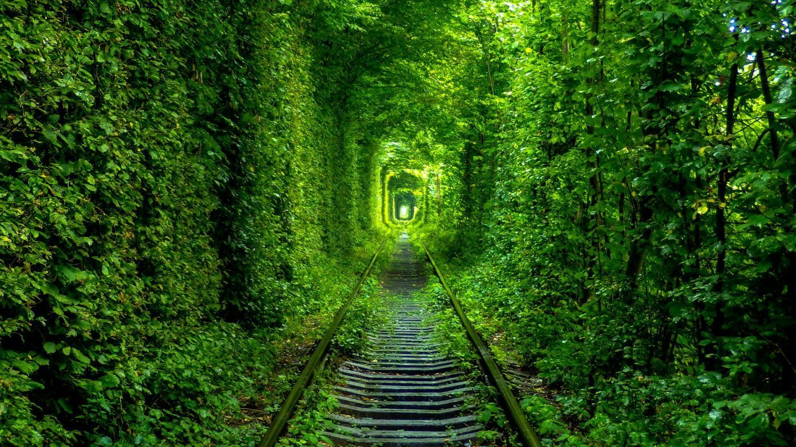
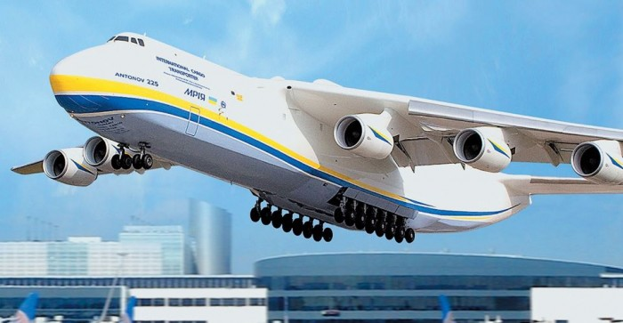
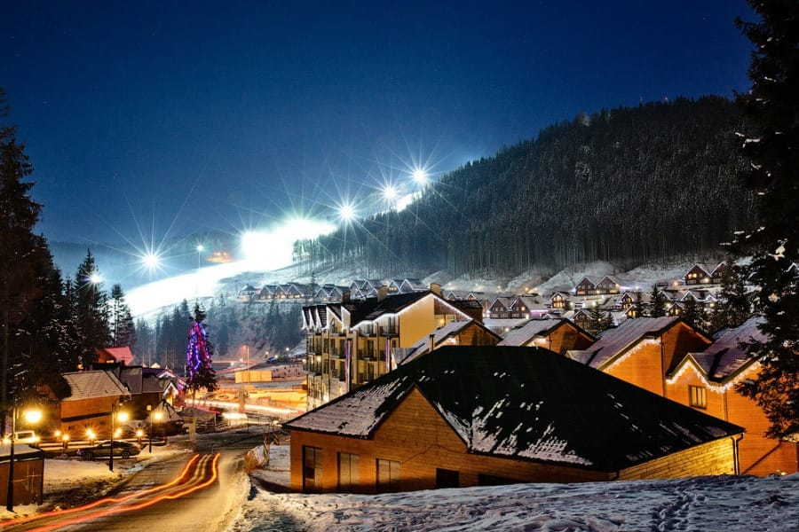

Україна є найбільшим округом континенту на 603 628 квадратних кілометрів, що простягається від Росії на сході і до Польщі на заході і розташована між Чорним морем на півдні та колишньою радянською державою Білорусі на півночі. Франція знаходиться на відстані 51695 квадратних кілометрів.
В межах своїх великих кордонів Україна має сім об’єктів Всесвітньої спадщини, включаючи собор Святої Софії XI ст. У Києві, стародавнє місто Херсонес та первісні букові ліси Карпат. Іншою є геодезична дуга Струве, ланцюжок триангуляцій, що зв’язує Хаммерфест в Норвегії з Чорним морем в Україні. Він «допоміг» встановити точні розміри і форму планети і відзначив важливий крок у розвитку наук «про Землю і топографічного картографування», – вважає ЮНЕСКО. Поза межами об’єктів світової спадщини він має величезну кількість величних православних соборів, у тому числі Святого Михайла в Києві, зображеному нижче.
3. Українці люблять Mcdonald’s
Макдональдс поруч з головним залізничним вокзалом Києва, є третім за кількістю відвідування в світі.
В межах України знаходиться географічний центр Європи. Ряд місцевостей претендують на титул, і це залежить від того, як ви оцінюєте Європу, але маленьке містечко Рахів на заході України є одним з таких місць.
Станція метро Арсенальна, на київській Святошинсько-Броварській лінії,є найглибшою у світі . ЇЇ глибина 105,5 метрів.

Вулицю Хрещатик, часто називають найкоротшою, але найширшою вулицею у світі. ЇЇ довжина лише 1,2 км, але надзвичайно широка. Вулиця була зруйнована під час Другої світової війни, згодом відновлена.

Котлета по-київськи – Улюблена страва як місцевих жителів, так і багатьох туристів. Якщо Ви сробуєте цю страву- її смак Ви не забудете ніколи…

Місто Чорнобиль, місце найгіршої катастрофи АЕС в світі. Розташоване на півночі України, зараз є центром Чорнобильської зони відчуження, яку створила СРСР незабаром після аварії в 1986 році. Екскурсії по району, включаючи електростанцію, доступні, за ризиком мандрівника. Рівні радіації залишаються небезпечно високими.
У Львові іноді стверджуєть, що на душу населення є найбільша кількість кафе. Фіона Дункан, після відвідування Львова сказала: «Львів’яни сьогодні відомі своїм гарячим націоналізмом, релігійністю, їхнє місто має легке, майже легковажне повітря; місто наповнене студентами ,університетами, ароматом кави та неймовіро запашної випічки. Ренесанс, бароко ,будівлі в стилі модерн і аромати з сотень кав’ярень віденського стилю – вражають ! Треба було лише вийти з готелю, опери і прогулятися в натовпі по центральній вулиці Львова, проспекту Свободи, щоб з’ясувати, наскільки це місце самобутнє та неповторне».

Тунель кохання, чудова заставка в Instagram. Знаходиться в лісах поблизу міста Клевань. Ця залізнична дорога для потягу, який забезпечує дровами місцеву фабрику.

Літак Антонов Ан-225 Мрія має найбільший розмах крил ніж будь-який інший – 88,4 метра і важить 640,000 кг.

Це не французькі Альпи, але Україна має близько чотирьох або п’яти гірськолижних курортів, включаючи Буковель у Карпатах, 55 км схилів і 15 підйомників.

У Радянський Союзі Київ отримав статус міста-героя після його опору нацистам у битві за Київ. Незважаючи на те, що битва вважається величезною перемогою Гітлера, місто було нагороджено за свою оборону титулом міста-героя в 1965 році.
За допомогою унікальної древньої техніки на свято Великодня розписують яйця писачком ,який розігрівають над вогнем разом з воском.
Україна – Батьківщина першої у світі Конституції Пилипа Орлика. Вона була написана українським козаком у 1710 році, таким чином встановила демократичний стандарт для розподілу влади в уряді між законодавчою, виконавчою та судовою гілками.
created with
Online HTML Editor .